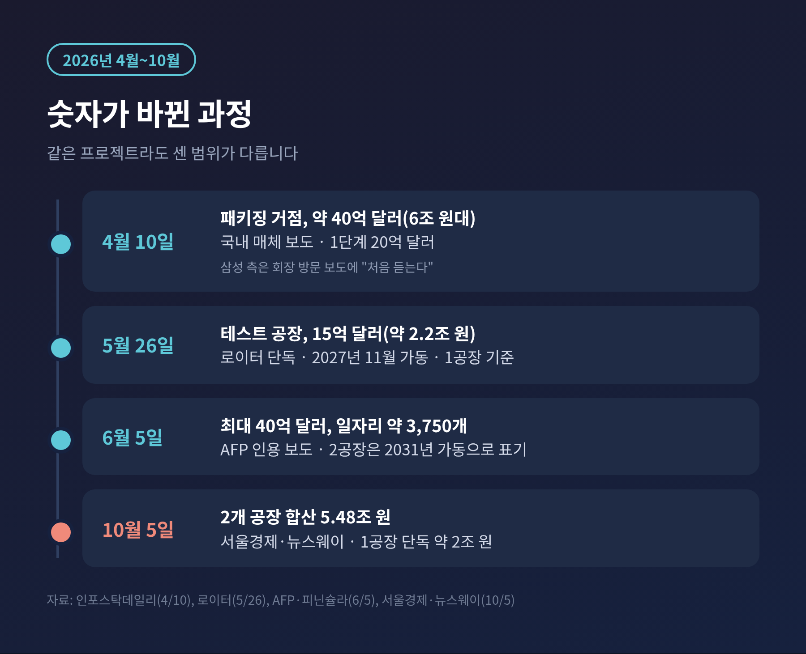
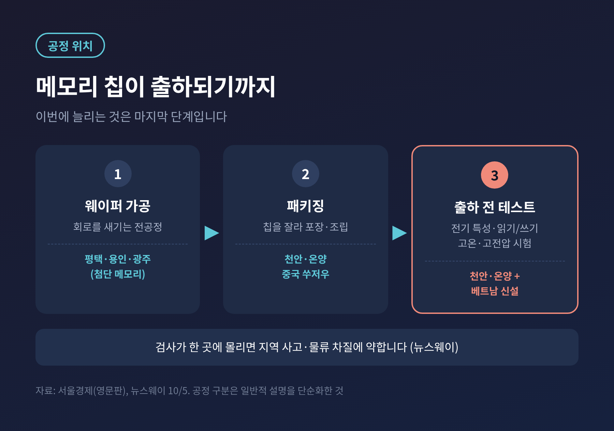
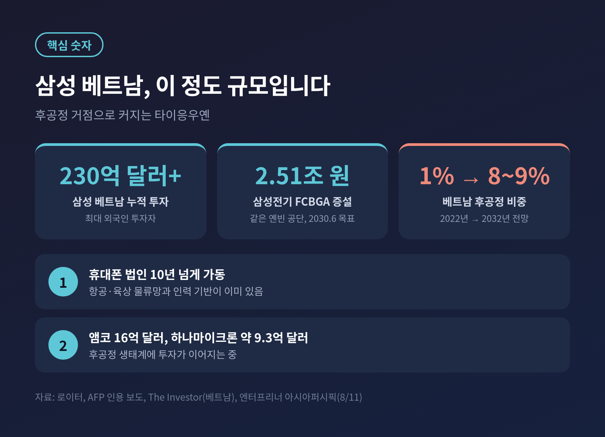
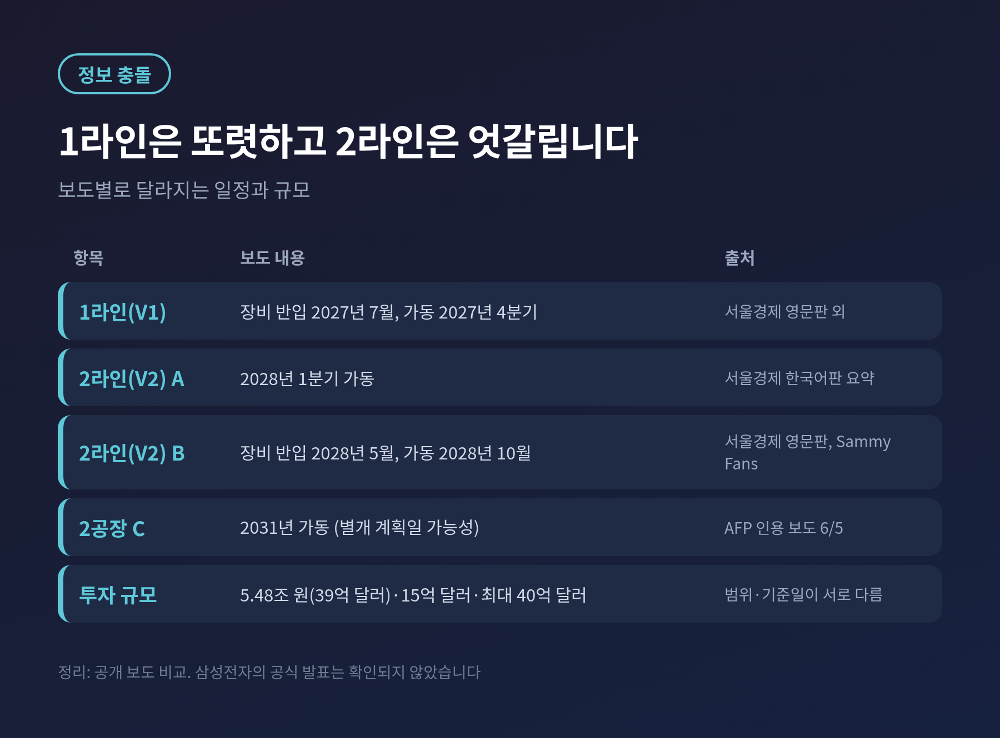
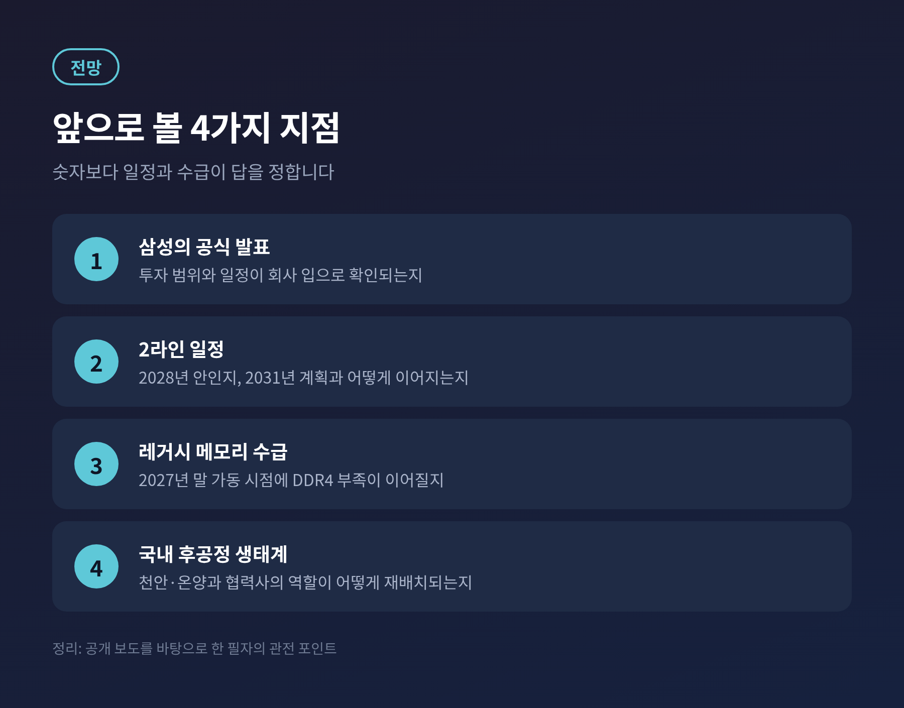

삼성전자 베트남 메모리 테스트 공장 5.5조 투자, 후공정 분산의 속내

삼성전자가 베트남 북부 타이응우옌성에 D램·낸드 후공정 공장 두 곳을 짓는 계획이 10월 5일 보도로 구체화됐습니다. 총 투자액은 약 5조 4,800억 원입니다.
이번 글에서는 이 계획이 무엇이고 왜 지금 나왔는지, 5월 첫 보도와 숫자가 왜 달라졌는지, 앞으로 무엇을 지켜봐야 하는지를 정리해 보겠습니다.
3줄 요약
삼성전자는 옌빈 공단에 D램·낸드 출하 전 검사(테스트) 공장 2곳을 총 5.48조 원(105조 7,944억 동)으로 짓고, 1라인은 2027년 4분기에 가동할 계획으로 보도됐습니다.
5월 로이터가 전한 15억 달러(약 2.2조 원)는 1공장 기준이었고, 이번 숫자는 두 공장을 합친 규모로 읽힙니다.
2라인 일정과 삼성의 공식 발표 여부는 보도마다 달라 아직 확정적으로 보기 어렵습니다.
무슨 일이 있었나
서울경제와 뉴스웨이 등은 10월 5일 삼성전자의 베트남 반도체 후공정 거점 계획을 일제히 전했습니다.
위치는 타이응우옌성 옌빈 공단입니다. 부지는 약 26만 5,895㎡로 축구장 37개 규모라고 합니다.
하는 일은 웨이퍼를 깎는 것이 아닙니다. 패키징까지 끝난 D램과 낸드플래시를 받아 전기적 특성과 읽기·쓰기 성능을 검사하고, 고온·고전압 시험으로 불량을 걸러낸 뒤 출하하는 최종 관문입니다.
일정은 1라인 기준으로 비교적 또렷합니다. 장비 반입이 2027년 7월, 가동이 2027년 4분기입니다.
현지 법인 삼성비나세미컨덕터(SVS)는 2026년 3월 세워졌습니다. 서울경제 영문판은 자금의 62.64%를 재투자 이익으로 충당한다고 전했습니다. 삼성 계열사 출자가 34.6%, 투자자 출자가 2.5%입니다.
인력 준비도 시작됐습니다. 베트남 엔지니어 약 100명(영문 보도는 103명)이 7월부터 천안·온양 캠퍼스에서 삼성의 SEED 프로그램으로 교육을 받고 있습니다. 베트남인이 이 과정에 참여하는 것은 처음이라고 합니다.

숫자는 왜 계속 바뀌었나
이 계획이 처음 알려진 것은 4월입니다. 국내 매체들은 약 40억 달러, 6조 원대의 '반도체 패키징 거점'이라고 썼습니다. 이재용 회장의 현장 점검 가능성도 나왔지만 삼성은 "처음 듣는 이야기"라고 답했습니다.
5월 26일에는 로이터가 사업 문서를 근거로 단독 보도했습니다. 15억 달러, 약 39조 동 규모의 첫 베트남 반도체 '테스트' 공장이었습니다. 하노이 북쪽 약 60km, 2027년 11월 가동, 현장에는 이미 삼성 엔지니어 200명 이상이 상주한다고 했습니다.
6월 AFP 인용 보도는 최대 40억 달러, 일자리 약 3,750개라고 전했습니다. 그리고 10월에 5.48조 원이 나왔습니다.
예전엔 '패키징 6조 원'이었고, 지금은 '테스트 5.48조 원'입니다. 겉으로는 비슷해 보이지만 센 범위가 다릅니다.
5월의 15억 달러는 1공장 기준입니다. 서울경제는 1공장 단독 투자를 약 2조 원으로 적었습니다. 이번 5.48조 원은 2개 공장 합산으로 읽힙니다.
서울경제 영문판도 본문에서는 약 39억 달러, 제목에서는 37억 달러로 표기했습니다. 환율과 기준일에 따른 차이로 보이지만 확인된 설명은 없습니다.
왜 지금, 왜 테스트 공장인가
가장 큰 배경은 메모리 공급의 쏠림입니다. 삼성과 SK하이닉스가 웨이퍼 생산능력을 HBM과 DDR5 같은 AI용 고부가 제품에 몰면서, DDR4·LPDDR4 같은 구세대 제품은 공급이 빠듯해졌습니다. 차량, 산업, 가전에서는 여전히 수요가 있습니다.
테크타임스는 삼성이 LPDDR4와 LPDDR4X 신규 주문을 4월에 중단했다고 전했습니다. 로이터는 이 공장의 주력이 노후 세대 메모리라고 적었습니다.

또 하나는 후공정의 지리입니다. 서울경제 영문판이 정리한 삼성의 구도는 이렇습니다. 첨단 메모리 생산은 평택·용인·광주, 파운드리는 미국 텍사스, 후공정은 한국, 중국 쑤저우, 그리고 베트남입니다.
뉴스웨이는 출하 전 검사가 천안·온양에 몰려 있어, 지역 사고나 물류 차질에 약하다는 점을 분산의 이유로 짚었습니다. 서울경제는 수출 거점 다변화와 관세·무역정책 위험 대응을 함께 거론했습니다. 다만 이는 매체의 해석이며, 삼성이 공식적으로 이유를 밝힌 것은 아닙니다.
시장 환경이 한쪽으로만 흐르는 것도 아닙니다. 트렌드포스의 9월 16일 스팟 시황 분석에서는 DDR5 문의가 둔화되고 일부 DDR4 제품은 매수세가 없다는 신호가 나왔습니다. 공장이 가동할 2027년 말에는 수급 풍경이 지금과 다를 수 있습니다.
왜 베트남인가
삼성은 베트남 최대 외국인 투자자입니다. 누적 투자액이 230억 달러를 넘는다는 점은 로이터, AFP 인용 보도, 국내 보도가 일치합니다. 타이응우옌에는 10년 넘게 가동한 휴대폰 법인이 있어 항공·육상 물류와 인력 기반이 이미 갖춰져 있습니다.
삼성전기도 같은 옌빈 공단에서 AI 서버용 FCBGA 기판 증설에 2.51조 원(약 18.5억 달러)을 투자합니다. 완공 목표는 2030년 6월입니다. 삼성전기 베트남 법인의 2025년 매출은 2.98조 원으로 연결 매출의 26.3%를 차지했습니다.

베트남의 후공정 위상도 달라지고 있습니다. 엔터프리너 아시아퍼시픽이 인용한 전망으로는 글로벌 후공정 비중이 2022년 약 1%에서 2032년 8~9%로 커집니다. 앰코가 16억 달러, 하나마이크론이 약 9.3억 달러 규모의 투자를 약속한 것도 같은 흐름입니다.
주승환 인하대 교수는 서울경제 영문판에서 베트남이 저임금 조립기지에서 'AI 반도체 공급망의 핵심 축'으로 바뀌고 있다고 평가했습니다.
쟁점과 한계

첫째는 일정의 불확실성입니다. 2라인 가동 시점이 서울경제 한국어판 요약에서는 2028년 1분기, 영문판과 Sammy Fans에서는 장비 반입 2028년 5월에 가동 10월로 서로 다릅니다. 6월 AFP 인용 보도는 2공장 가동을 2031년으로 썼습니다. 어느 쪽이 맞는지는 공식 자료가 나와야 가려집니다.
둘째는 공식 확인입니다. 이번 내용은 현지 투자 인허가 자료와 매체 취재에 근거합니다. 삼성이 직접 발표한 문구는 제가 확인하지 못했습니다.
셋째는 국내 영향입니다. 테스트 물량이 해외로 나뉘면 천안·온양의 후공정과 협력사에 어떤 영향이 있을지가 쟁점이 될 수 있습니다. 이 부분을 직접 다룬 보도는 이번 조사에서 찾지 못해 단정하지 않겠습니다.
넷째는 부가가치입니다. 테스트는 후공정이라 고용과 이익 기여가 크지 않다는 시각이 있습니다. 반대로 출하 전 최종 관문이라는 점에서 공급망의 핵심이라는 시각도 있습니다.
앞으로 볼 지점

첫째는 삼성의 공식 발표입니다. 투자 범위와 일정이 회사 입으로 확인되는 순간 숫자 논란은 정리됩니다.
둘째는 2라인 일정입니다. 2028년 안이 맞는지, 2031년 계획과는 어떻게 이어지는지 봐야 합니다.
셋째는 레거시 메모리의 수급입니다. 2027년 4분기 가동 시점에 DDR4 부족이 이어질지, 풀릴지가 공장의 성격을 좌우합니다.
넷째는 국내 후공정 생태계입니다. 천안·온양과 협력사의 역할이 어떻게 재배치되는지 확인해야 합니다.
정리하면 이렇습니다.
이번 계획은 AI 호황의 한복판에서 오히려 구세대 메모리와 후공정이라는 가장자리를 챙기는 투자입니다. 화려한 HBM 뒤편에서 출하 직전의 검사 라인이 공급망의 약한 고리가 될 수 있다는 판단이 읽힙니다.
"웨이퍼는 한국에서, 마지막 검사는 여러 곳에서."
2027년 말 첫 라인이 돌아갈 때 이 분산이 안정으로 남을지, 비용으로 남을지. 숫자보다 일정과 수급이 그 답을 정할 것입니다.